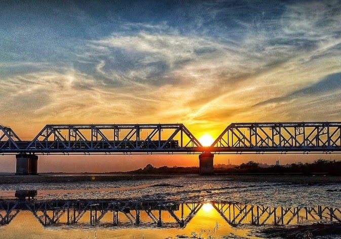

"Nature is not a place to visit, it is home." Gary Snyder
"Rest is not idleness, and to lie sometimes on the grass under trees on
a summer's day, listening to the murmur of the water, or watching the
clouds float across the sky, is by no means a waste of time." Sir John
Lubbock

A.P.J Abdul Kalam was the 11th President of India. His work with the
Defence Research and Development Organisation in developing military
He started his career by designing a small hovercraft, but remained
unconvinced by his choice of a job at DRDO. Kalam joined the INCOSPAR,
working under Vikram Sarabhai, the renowned space scientist. He was
interviewed and recruited into ISRO by H. G. S.
Avul Pakir Jainulabdeen Abdul Kalam BR was an Indian aerospace
scientist and statesman who served as the 11th president of India from
interviewed and recruited into ISRO by H. G. S.
served as the 11th president of India from
2002 to 2007. He was born and raised in Rameswaram, Tamil Nadu and
Technology. Kalam earned a degree in aeronautical engineering from the
Madras Institute of Technology and in 1958 joined the Defence Research
and Development Organisation (DRDO). served as the 11th president of India from
He was known as the 'Missile Man of India' for his work in the
development of ballistic missile served as the 11th president of India from
technology. From 1992 to 1999, Kalam
was the Chief Scientific Adviser to the Prime Minister and the
Secretary of the DRDO. Kalam was the Chief Project Coordinator during
the Pokhran II tests.
The Golden Bridge connects Ankleshwar to Bharuch in the Gujarat state of
western India. It was built in 1881 by the British, who needed a bridge
across the Narmada River to create better The bridge is
also called the Narmada Bridge.
The British started construction on the iron bridge on 7 December 1877. The bridge was contracted by the Bombay,
Baroda, and Central India Railway and was designed by Sir John Hawkshaw.[2] The bridge was completed on 16 May
1881 at a cost of Rs 45.65 lakhs. Originally named the Narmada Bridge, it came to be known as the Golden Bridge on
account of the heavy expenditure incurred during construction due to damage from heavy water flow.
The British started construction on the iron bridge on 7 December 1877. The bridge was
contracted by the Bombay, Baroda, and Central India Railway and was designed by Sir John Hawkshaw.[2] The bridge
was completed on 16 May 1881 at a cost of Rs 45.65 lakhs. Originally named the Narmada Bridge, it came to be known
as the Golden Bridge on account of the heavy expenditure incurred during construction due to damage from heavy
water flow.
After independence, it became part of the national highway. However, the flow of heavy traffic was reduced after a
new bridge on Narmada was built
The length of the Golden Bridge is 1,412 metres (4,633 ft).
